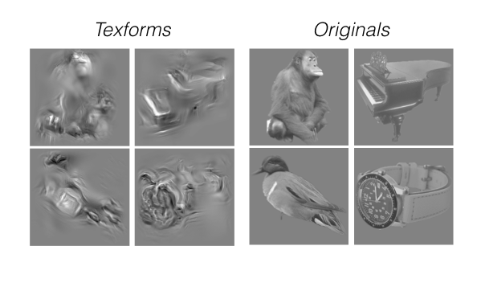
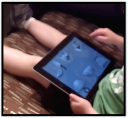
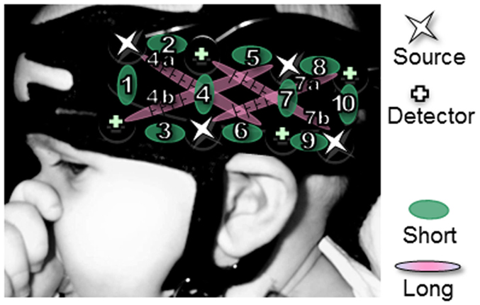

Research

Visual concepts across childhood
Drawing a tiger requires both accessing a mental representation of “a tiger” and communicating it in a few well-placed strokes. Using over 37,000 digital drawings collected on an iPad, analyzed with deep neural network embeddings and human annotations, we find that children change both in their ability to include category-diagnostic information in their drawings and in their ability to recognize other children's drawings.
Selected papers
Du, H.†, Sepuri, T.†, Maheshwari, U., Zhu, R., Arieda, J. O., & Long, B. (2026). Structure and diversity in children’s line drawings of object categories across four international contexts. Cognitive Computational Neuroscience. pdf
Zhu, R., Arieda, J. O., Kilonzo, T. N., Watson, Z. D., Sepuri, T.†, Long, B., Fan, J. E., & Frank, M. C. (in press). Developmental changes in children’s production of line drawings in global contexts: Evidence from Kisumu, Kenya. Developmental Science. preprint
Long, B., Fan, J. E., Huey, H., Chai, Z.†, & Frank, M. C. (2024). Parallel developmental changes in children's production and recognition of line drawings of visual concepts. Nature Communications. open access repository
Long, B., Wang, Y., Christie, S., Frank, M. C., & Fan, J. E. (2023). Developmental changes in drawing production under different memory demands in a U.S. and Chinese sample. Developmental Psychology. pdf repository
Press and talks: Bing Nursery School · CDM Purple Museum · CogSci 2022 Images2Symbols talk


What do babies see as they learn?
What is the structure of infants' and young children's everyday visual experience, and how does it scaffold early learning? We record video from the child's perspective with the BabyView camera, a high-resolution head-mounted camera, and analyze it with computer vision and multimodal models, characterizing the objects, people, and activities children encounter and how what they see aligns with what they hear.
Selected papers
Frank, M. C., Tan, A. W. M., Aw, K. L., Sparks, R. Z., Moreno, V., Keene-Lee, G., Ryan, M. R., Sepuri, T.†, Yang, J.†, Marchman, V. A., Yamins, D. L. K., & Long, B. (2026). Scaling cross-situational word learning on children’s naturalistic experiences. arXiv. arxiv
Yang, J.†, Sepuri, T.†, Tan, A. W. M., Aw, K. L., Frank, M. C., & Long, B. (2026). Characterizing the visual representation of objects from the child's view. arXiv. In revision, Nature Human Behaviour. arxiv
Tan, A. W. M., Aw, K. L., Sepuri, T.†, Sparks, R. Z., Yang, J.†, Marchman, V. A., Long, B., & Frank, M. C. (2026). Predicting children’s early word learning using egocentric videos of their learning environments. Proceedings of the Annual Meeting of the Cognitive Science Society (Vol. 48). pdf
Tan, A. W. M.*, Yang, J.†*, Sepuri, T.†, Aw, K. L., Sparks, R. Z., Yin, Z., Marchman, V., Frank, M. C., & Long, B. (2025). Assessing the alignment between infants' visual and linguistic experience using multimodal language models. arXiv. arxiv
Sepuri, T.†*, Aw, K. L.*, Tan, A. W. M.*, Sparks, R. Z., Marchman, V. A., Frank, M. C., & Long, B. (2025). Characterizing young children’s everyday activities using video question-answering models. NeurIPS DBM Workshop. open access
Long, B.*, Sparks, R. Z.*, Xiang, V.*, Stojanov, S.*, Yin, Z., Keene, G. E., Nag, A., Zhuang, C., Marchman, V., Yamins, D. L. K., & Frank, M. C. (2025). The BabyView dataset: High-resolution egocentric videos of infants' and young children's everyday experiences. Cognitive Computational Neuroscience. doi arxiv
Long, B., Goodin, S., Kachergis, G., Marchman, V., Radwan, S., Sparks, R., Xiang, V., Zhuang, C., Hsu, O., Newman, B., Yamins, D. L. K., & Frank, M. C. (2024). The BabyView camera: Designing a new head-mounted camera to capture children’s early social and visual environment. Behavior Research Methods. pdf repository
Long, B., Kachergis, G., Agrawal, K.†, & Frank, M. C. (2022). A longitudinal analysis of the social information in infants’ naturalistic visual experience using automated detections. Developmental Psychology. pdf repository

Meaning from mid-level features
Do we need to recognize an object before we know whether it is alive or how big it is? Using unrecognizable “texforms” (textures that preserve the coarse form of an object), we found that mid-level features carry information about animacy and real-world size, automatically trigger real-world size processing, and explain the large-scale organization of ventral visual cortex. See the Texform FAQ to make your own.
Selected papers
Long, B., Yu, C.-P., & Konkle, T. (2018). Mid-level visual features underlie the high-level categorical organization of the ventral stream. Proceedings of the National Academy of Sciences. pdf repository
Long, B. & Konkle, T. (2017). A familiar-size Stroop effect in the absence of basic-level recognition. Cognition. pdf repository
Long, B., Störmer, V. S., & Alvarez, G. A. (2017). Mid-level perceptual features contain early cues to animacy. Journal of Vision. open access repository


Developing representations of animacy and object size
How do we learn which bundles of visual features describe “animals,” or that objects that are big in the real world tend to be boxy? Adapting adult psychophysical paradigms (visual search, Stroop tasks) for preschoolers, we found that preschoolers show the same signatures of animacy and object size representations as adults, and preliminary evidence that even one-year-olds process the real-world sizes of depicted objects.
Selected papers
Long, B., Moher, M., Carey, S. E., & Konkle, T. (2019). Animacy and object size are reflected in perceptual similarity computations by the preschool years. Visual Cognition. pdf repository
Long, B., Moher, M., Carey, S., & Konkle, T. (2019). Real-world size is automatically encoded in preschoolers’ object representations. Journal of Experimental Psychology: Human Perception and Performance. pdf repository
Long, B., Carey, S., & Konkle, T. (2016). Pre-verbal infants automatically activate real-world object size information. Poster presented at the Vision Sciences Society. pdf

Earlier work
For my master's at the École Normale Supérieure in Paris, I used EEG to show that infants rapidly learn cross-modal statistical regularities that shape how they process visual events, and during a Fulbright year I used NIRS to study phonological processing in 14-month-olds. As an undergraduate, I found that Japanese and English speakers remember the agents of intentional and accidental events differently.
Selected papers
Kouider, S., Long, B., Le Stanc, L., Barbosa, L. S., Fievet, A. C., & Gelskov, S. (2015). Neural dynamics of prediction and surprise in infants. Nature Communications. pdf
Fausey, C., Long, B., Inamori, A., & Boroditsky, L. (2010). Constructing agency: The role of language. Frontiers in Psychology. open access
All papers are on the Publications page.